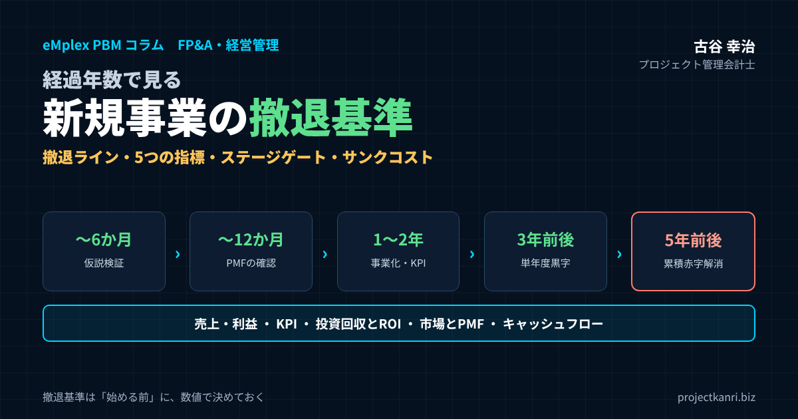

新規事業の撤退基準とは？経過年数で見る撤退タイミングと判断する5つの指標―撤退ラインの決め方、累積赤字・投資回収期間・ROI、ステージゲート、サンクコストへの対処、取締役会での意思決定と経営資源の再配分

結論：撤退基準は「始める前」に、経過年数と数値で決めておく
この記事のポイント
- 撤退基準は事業を始める前に「指標・水準・時点・判断者」の4要素で決めておく
- 判断には5つの指標（売上・利益／KPI／投資回収・ROI／市場とPMF／キャッシュフロー）を段階ごとに使い分ける
- 経過年数の目安は「3年前後で単年度黒字・5年前後で累積赤字解消」。ただし一律の正解はない
- 評価の期限は3か月・6か月・12か月。撤退ラインは「黄信号」と「赤信号」の二段階で設定する
- 判断はサンクコストではなく「これから」の数字で。撤退で浮いた資源の再配分先も同時に決める
プロジェクト管理会計士の古谷です。新規事業のご相談を受けていると、事業計画書には売上の伸び方が何ページにもわたって書かれているのに、「どうなったらやめるのか」が一行も書かれていない、という場面に何度も出会います。始める前は誰もが成功を信じていますので、撤退の話をすること自体が後ろ向きに見えてしまうのだと思います。
しかし、撤退基準がないまま事業を始めると、赤字が続いたときに「もう少し続ければ黒字になるかもしれない」「ここでやめたら、これまでの投資が無駄になる」という議論が毎回繰り返され、判断が先送りされます。その間にも赤字は積み上がり、優秀な人材と経営者の時間が、成果の出ない事業に縛られ続けます。
本記事でお伝えしたいのは、撤退基準は、事業を始める前に、経過年数と数値で決めておくべきだという考え方です。何年目のどの時点で、どの指標がどの水準に届いていなければ、継続・縮小・ピボット・撤退のどれを検討するのか。これを事前に合意しておけば、撤退の判断は「誰かの失敗を認める場」ではなく、「最初に決めたルールに照らして確認する場」になります。そして、その判断を支えるのが、新規事業の損益とキャッシュを正しく見える化する管理会計の仕組みです。
新規事業の撤退基準とは
新規事業の撤退基準とは、新しく立ち上げた事業について、継続するか、見直すか、撤退するかを判断するための、あらかじめ定めた条件のことです。撤退ライン、撤退条件、損切りラインなどと呼ばれることもあります。
撤退基準は、一般に、どの指標で判断するのか、どの水準を下回ったら見直すのか、いつの時点で判断するのか、誰が判断するのか、という四つの要素で構成されます。たとえば、「事業開始から3年目の決算で単年度の営業損益が黒字化していない場合、取締役会で撤退を含めた見直しを審議する」というのが、撤退基準の一つの例です。
ここで大切なのは、撤退基準は「この水準を下回ったら自動的にやめる」という機械的なルールではない、ということです。撤退基準に抵触したときに行うのは、撤退するかどうかの判断を、必ず正式な場で行うことです。基準に触れたからといって、すぐに撤退するとは限りません。継続する理由があれば、その理由を説明し、新たな期限と基準を定めて継続します。撤退基準の役割は、判断を自動化することではなく、判断を先送りさせないことにあります。
また、撤退基準は、事業を潰すためのものではありません。むしろ、撤退の条件が明確であるからこそ、その条件に触れるまでは、思い切って挑戦することができます。撤退基準は、新規事業に挑戦する人に、安心して挑戦できる範囲を示すものでもあるのです。
なぜ新規事業の撤退判断は難しいのか
新規事業の撤退判断が難しい理由は、大きく四つあります。
一つ目は、サンクコストの存在です。すでに投じた資金や時間は、撤退しても継続しても戻ってきません。それにもかかわらず、「ここまで投資したのだから」という気持ちが、継続の判断を後押しします。これは人間の自然な心理ですが、経営判断としては誤りにつながります。
二つ目は、責任者の心理です。新規事業の責任者にとって、撤退は自分の失敗を認めることのように感じられます。また、新規事業を承認した経営者自身にとっても、撤退は自分の判断の誤りを認めることになります。その結果、責任者も経営者も、撤退を言い出しにくくなります。
三つ目は、新規事業の数字が見えていないことです。新規事業の売上や費用が既存事業と混ざっていて、新規事業単体でいくら赤字なのか、累積でいくら投資したのかが分からない会社は少なくありません。人件費が既存部門に計上されたまま、新規事業に工数を使っているケースもあります。数字が見えなければ、撤退の議論は、印象と熱意のぶつかり合いになってしまいます。
四つ目は、新規事業にはもともと時間がかかる、という事実です。新規事業が最初の数年間赤字であることは珍しくありません。そのため、「赤字だから撤退」という単純な判断はできず、「この赤字は計画どおりの赤字なのか、計画を外れた赤字なのか」を見分ける必要があります。これを見分けるためには、事前に経過年数ごとの到達目標を決めておくしかありません。
| 要因 | 起きること | 対策 |
|---|---|---|
| サンクコスト | 「ここまで投資したのだから」と継続に傾く | 判断資料を「これから」の数字で作る |
| 責任者の心理 | 推進者も承認した経営者も撤退を言い出しにくい | 撤退基準を事前に合意し、提案者を不利に扱わない |
| 数字が見えない | 新規事業単体の赤字・累積投資額が分からない | 事業別損益と工数による人件費の把握 |
| 赤字が前提 | 計画どおりの赤字か、計画外の赤字か区別できない | 経過年数ごとの到達点を事前に決める |
撤退基準の指標①：売上・利益（限界利益と貢献利益で見る）
撤退基準の第一の指標は、売上と利益です。ただし、新規事業の利益を見るときには、どの段階の利益で見るのかに注意が必要です。
まず見るべきは、限界利益です。限界利益とは、売上から、売上に比例して増える変動費を差し引いた利益です。限界利益がマイナスの事業は、売れば売るほど赤字が増えます。この状態では、売上を伸ばしても赤字は解消しません。価格や原価の構造そのものを見直す必要があり、見直しができないのであれば、撤退を真剣に検討すべき段階です。
次に見るべきは、貢献利益です。貢献利益とは、限界利益から、その事業のために直接かかっている固定費、たとえば専任の人件費や専用の設備費、広告費などを差し引いた利益です。貢献利益は、その事業をやめたときに、会社全体の利益がどれだけ変わるかを示します。
一方で、本社費や共通費を配賦した後の利益で撤退を判断するのは危険です。配賦後の利益が赤字でも、貢献利益が黒字であれば、その事業をやめると、配賦されていた共通費を残りの事業で負担することになり、会社全体の利益はかえって減ります。撤退判断は、配賦後の利益ではなく、貢献利益で行うのが原則です。この考え方は、不採算顧客の分析とまったく同じです。
さらに、損益分岐点も確認します。損益分岐点売上高は、固定費を限界利益率で割って求めます。現在の売上が損益分岐点からどれだけ離れていて、その差を何年で埋められる見込みなのかを見ることで、黒字化までの距離が分かります。
| 利益の段階 | 計算 | 撤退判断での意味 |
|---|---|---|
| 限界利益 | 売上－変動費 | マイナスなら売るほど赤字。構造の見直しか撤退を検討 |
| 貢献利益 | 限界利益－事業の直接固定費 | やめたときに会社全体の利益が変わる額。撤退判断の中心 |
| 配賦後利益 | 貢献利益－本社費・共通費の配賦額 | 参考情報。これだけで撤退を判断しない |
| 損益分岐点売上高 | 固定費÷限界利益率 | 黒字化までの距離を把握する |
撤退基準の指標②：KPI（売上になる前の先行指標）
第二の指標は、KPIです。新規事業の初期段階では、売上や利益はまだ小さく、売上や利益だけでは事業の可能性を判断できません。そこで、売上につながる先行指標をKPIとして設定し、その到達度で判断します。
KPIは事業の性質によって異なります。サブスクリプション型のサービスであれば、有料契約数、解約率、顧客獲得単価、顧客生涯価値などが代表的です。受託型の事業であれば、引き合い件数、提案件数、受注率、平均受注単価、リピート率などが考えられます。プロダクトを販売する事業であれば、試用からの購入率や継続購入率などが該当します。
大切なのは、KPIの数を絞ることです。KPIを十数個並べると、どれかは必ず良い数字になりますので、継続の理由がいつでも見つかってしまいます。撤退基準に使うKPIは、事業の成否を最もよく表す二つか三つに絞り、目標値と期限を明確にしておきます。
また、KPIは、事業の段階によって変えていきます。立ち上げ直後は顧客の反応や継続率、事業化の段階では顧客獲得単価と受注率、拡大の段階では限界利益率や一人当たりの売上高というように、段階ごとに見るべき指標は変わります。後ほど説明する経過年数ごとの撤退タイミングと組み合わせて、どの段階でどのKPIを見るのかを決めておきましょう。
| 事業モデル | 主なKPI | 撤退判断での見方 |
|---|---|---|
| サブスクリプション型 | 有料契約数、解約率、顧客獲得単価、顧客生涯価値 | 顧客生涯価値が獲得単価を十分に上回るか |
| 受託・サービス型 | 引き合い件数、受注率、平均受注単価、リピート率 | 受注率とリピート率が計画水準に届くか |
| プロダクト販売型 | 試用からの購入率、継続購入率、限界利益率 | 継続購入が生まれ、限界利益率が確保できるか |
KPIは2〜3個に絞り、目標値と期限をセットで決めておきます。
撤退基準の指標③：投資回収期間・累積赤字・ROI・ROIC
第三の指標は、投資の回収です。新規事業は、多くの場合、最初の数年間に赤字を出しながら投資を続けます。その投資を、いつまでに、どれだけ回収できるのかを見るのが、この指標です。
まず押さえたいのが、累積赤字です。単年度の損益が黒字になっても、それまでに積み上がった赤字が解消されていなければ、投資はまだ回収されていません。撤退基準では、単年度の黒字化の時期と、累積赤字の解消の時期を、分けて設定するのが実務的です。また、累積赤字の上限額を決めておくことも有効です。「累積赤字が○億円に達した時点で、必ず見直しを審議する」という基準は、分かりやすく、先送りを防ぐ効果があります。
次に、投資回収期間です。投資回収期間とは、投じた資金を、事業が生むキャッシュで回収するまでにかかる期間です。計算が簡単で分かりやすい一方で、回収した後の収益を考慮しないという弱点がありますので、ほかの指標と組み合わせて使います。
そして、ROIとROICです。ROIは投資額に対する利益の割合、ROICは事業に投じた資本に対する税引後営業利益の割合です。新規事業が軌道に乗った段階では、その事業のROICが、会社の資本コストを上回っているかどうかが重要になります。資本コストを上回らない事業は、利益が出ていても、企業価値を高めているとはいえません。とはいえ、立ち上げ直後の新規事業にROICを当てはめると、ほぼすべての事業が基準を下回りますので、ROICは事業化の後半から拡大段階で使う指標と考えるのが現実的です。
| 指標 | 内容 | 使う段階・注意点 |
|---|---|---|
| 累積赤字 | 事業開始からの損益の累計 | 上限額を決めておくと先送りを防げる |
| 投資回収期間 | 投資額をキャッシュで回収するまでの期間 | 分かりやすいが回収後の収益は考慮しない |
| ROI | 投資額に対する利益の割合 | 施策・投資単位の比較に使いやすい |
| ROIC | 投下資本に対する税引後営業利益の割合 | 事業化の後半〜拡大期に資本コストと比較する |
なお、投資回収の指標を見るときには、新規事業に投じた資金の範囲を明確にしておく必要があります。専任メンバーの人件費だけでなく、兼務メンバーの工数分の人件費、開発に使った外注費、広告宣伝費、専用のシステム費用なども含めて、新規事業への投資額として集計します。投資額を小さく見積もると、回収期間も短く見え、撤退の判断が遅れます。
撤退基準の指標④：市場成長性・競争優位・PMF
第四の指標は、市場と競争の状況です。数字の上では計画を下回っていても、市場そのものが急速に伸びているのであれば、継続する意味があるかもしれません。逆に、計画どおりに売上が伸びていても、市場が縮小していたり、強い競合が参入してきたりしているのであれば、将来の見通しは厳しくなります。
ここで確認したいのは、三つの点です。一つ目は、狙っている市場が伸びているかどうか。二つ目は、自社がその市場で勝てる理由、つまり競争優位があるかどうか。三つ目は、PMF、つまり、自社の製品やサービスが、市場の顧客に本当に必要とされている状態に達しているかどうかです。
PMFは、新規事業の撤退判断において特に重要な考え方です。PMFに達していない段階で、営業人員や広告費を増やして売上を伸ばそうとしても、顧客は定着せず、投資は回収されません。PMFの判断は難しいものですが、継続率が高いか、顧客が自ら紹介してくれるか、値上げをしても顧客が離れないか、といった兆候で確認します。
市場や競争の評価は、どうしても定性的になります。そこで、定性的な評価も、できるだけ事前に問いの形にしておきます。たとえば、「事業開始から12か月の時点で、継続率が○%を超え、かつ既存顧客からの紹介による受注が一定数あるか」というように、定性的な状態を、確認できる事実に置き換えておくのです。
撤退基準の指標⑤：キャッシュフローと資金繰り
第五の指標は、キャッシュフローです。利益とキャッシュは一致しません。新規事業では、売上が立っても入金が遅い、先に在庫や設備に資金を投じる、といった理由で、利益以上に資金が流出することがよくあります。
撤退基準としてキャッシュフローを見るときには、新規事業単体のキャッシュフローと、会社全体の資金繰りの両方を確認します。新規事業単体では、営業キャッシュフローがいつプラスに転じるのか、それまでに必要な資金の総額はいくらなのかを把握します。会社全体では、新規事業への資金投入が、既存事業の運転資金や借入金の返済、手元資金の安全水準を脅かしていないかを確認します。
特に中堅・中小企業では、新規事業の撤退基準を、会社全体の資金繰りと結びつけて設定することが大切です。たとえば、「新規事業への累計の投資額は、手元資金の○%を上限とする」「会社全体の手元資金が月商の○か月分を下回った場合は、新規事業への追加投資を止める」といった基準です。新規事業の失敗は取り返せますが、資金繰りの失敗は会社そのものを危うくします。
私自身、新卒で入社した建設会社で、会社が和議を申請するという経験をしました。会社が資金繰りに行き詰まると、どれほど良い事業を持っていても、それを続けることはできなくなります。新規事業の撤退基準の中で、資金に関する基準だけは、どのような理由があっても例外を設けない、というくらいの姿勢でよいと私は考えています。
| 指標 | 主に見る段階 | 撤退ラインの例（架空） |
|---|---|---|
| ①売上・利益 | 事業化〜拡大 | 3年目に単年度の貢献利益が黒字化していない |
| ②KPI | 仮説検証〜事業化 | 12か月時点で継続率が目標を下回る |
| ③投資回収・ROI | 事業化〜拡大 | 累積赤字が上限額を超える見込み |
| ④市場・競争・PMF | 仮説検証〜事業化 | 紹介や継続など、顧客に必要とされている兆候がない |
| ⑤キャッシュフロー | 全段階 | 会社全体の手元資金が安全水準を下回る |
経過年数で見る撤退タイミングの目安―何年で撤退を判断するか
新規事業は何年で撤退を判断すべきか、というご質問をよくいただきます。結論から申し上げると、「何年」という一律の正解はありません。業種、事業モデル、投資の規模によって、黒字化までにかかる年数は大きく異なります。ただし、新規事業の実務では、段階ごとに確認すべき到達点の目安として、次のような区切りがよく使われます。
立ち上げから6か月程度までは、仮説検証の段階です。この段階では、売上や利益ではなく、顧客が本当にその課題を抱えているか、自社の解決策にお金を払ってくれるか、という仮説を検証します。6か月から12か月程度は、PMFを確認する段階です。継続率や紹介の発生など、顧客に必要とされている兆候が見られるかを確認します。
1年から2年程度は、事業化の段階です。顧客獲得単価、受注率、限界利益率といったKPIが、事業として成り立つ水準に達しているかを確認します。そして、3年前後で単年度の黒字化、5年前後で累積赤字の解消、というのが、多くの会社で使われる一つの目安です。
繰り返しになりますが、これはあくまでも目安です。設備投資の大きい事業や、規制の多い業界の事業では、もっと長い期間がかかることがあります。逆に、受託型のサービス事業のように初期投資が小さい事業であれば、もっと短い期間で判断すべきです。大切なのは、自社の事業について、事業を始める前に、経過年数ごとの到達点を決めておくことです。
| 経過年数（目安） | 段階 | 確認する到達点 | 評価の頻度 |
|---|---|---|---|
| 〜6か月 | 仮説検証 | 顧客の課題と支払意思が確認できたか | 3か月ごと |
| 6〜12か月 | PMFの確認 | 継続率・紹介など顧客に必要とされる兆候があるか | 3か月ごと |
| 1〜2年 | 事業化 | 獲得単価・受注率・限界利益率が成り立つ水準か | 6か月ごと |
| 3年前後 | 収益化 | 単年度の黒字化（貢献利益ベース） | 6か月ごと |
| 5年前後 | 投資回収 | 累積赤字の解消・資本コストを上回る収益性 | 12か月ごと |
年数は一般的な目安です。業種・事業モデル・投資規模によって適切な期間は異なります。
そして、もう一つ大切なのが、評価の頻度です。年に一度の決算でしか撤退の判断をしないと、判断が遅れます。私は、立ち上げ直後の段階では3か月ごと、事業化の段階では6か月ごと、軌道に乗った後は12か月ごとに、撤退基準に照らした評価を行うことをお勧めしています。評価の期限をカレンダーに入れておくだけで、判断の先送りは大きく減ります。
評価の時点で大切なのは、その時点の実績だけでなく、次の評価時点までの見通しも併せて確認することです。たとえば、12か月時点では継続率が目標に届いていなくても、直近の3か月で明確に改善しているのであれば、次の評価時点までの猶予を与えるという判断もありえます。ただし、その場合も、次の評価時点で何が達成されていれば継続し、達成されていなければどうするのかを、その場で決めておきます。猶予を与えるときこそ、次の基準を明確にすることが大切です。
撤退ラインの決め方―数値例で考える
それでは、撤退ラインを具体的にどう決めるのかを、数値例で考えてみましょう。ここでは、ある会社が、受託型の新しいサービス事業を立ち上げ、「3年目に単年度黒字、5年目に累積赤字を解消する」という計画を立てた、という架空の例を使います。
| 年度 | 売上高 | 営業損益 | 累積損益 |
|---|---|---|---|
| 1年目 | 20 | −80 | −80 |
| 2年目 | 60 | −50 | −130 |
| 3年目 | 120 | +10 | −120 |
| 4年目 | 200 | +50 | −70 |
| 5年目 | 280 | +80 | +10 |
累積赤字が最も大きくなるのは2年目の1億3,000万円です。撤退ラインの累積赤字の上限（1億5,000万円）は、この計画の最大値に一定の余裕を持たせて設定しています。
この計画に対して、撤退ラインを設定します。たとえば、「各年度の営業損益が計画を○千万円以上下回った場合は見直しを審議する」「3年目の決算で単年度の営業損益が赤字の場合は、撤退を含めて審議する」「累積赤字が計画の上限である1億5,000万円を超える見込みになった時点で、追加投資を止めて審議する」という三つのラインを置く、という具合です。
ここでのポイントは三つあります。一つ目は、撤退ラインを計画の数字と結びつけることです。撤退ラインが計画と無関係に決められていると、計画が下方修正されるたびに撤退ラインも動いてしまいます。二つ目は、累積赤字の上限、つまり、この事業に最大いくらまで投じるのかを決めておくことです。これが、経営者にとって最も重要な撤退ラインです。三つ目は、撤退ラインを、見直しの審議を開始する水準と、撤退を原則とする水準の二段階で設定することです。
二段階の考え方を表にすると、次のようになります。黄信号の段階では、原因を分析し、計画を見直します。赤信号の段階では、撤退を原則とし、継続する場合には、継続する理由と新たな期限を、取締役会や経営会議で説明することを求めます。
| 区分 | 水準の例 | 対応 |
|---|---|---|
| 青信号 | 計画どおり、または計画との差異が許容範囲内 | 継続。次の評価時点で再確認 |
| 黄信号 | 営業損益やKPIが計画を一定以上下回る | 原因分析と計画の見直し。評価の頻度を上げる |
| 赤信号 | 評価時点で単年度黒字化せず／累積赤字が上限を超える見込み | 撤退を原則とし、継続する場合は理由と新たな期限を説明 |
また、撤退ラインを設定するときには、予実管理の仕組みが欠かせません。年度の計画を月次に展開し、毎月の実績と比較して、差異の原因を把握する。そして、年度末の着地見込みを毎月更新する。この仕組みがあれば、撤退ラインに抵触しそうなことを、決算を待たずに把握できます。
ステージゲートで撤退判断を仕組みにする
撤退基準を運用する仕組みとして有効なのが、ステージゲートの考え方です。ステージゲートとは、新規事業をいくつかの段階に分け、各段階の終わりに「ゲート」と呼ばれる審査を設けて、次の段階に進むか、やり直すか、中止するかを判断する方法です。
ステージゲートの利点は、投資を段階的に行える点にあります。最初から大きな予算を承認するのではなく、仮説検証の段階では小さな予算だけを承認し、ゲートを通過したら次の段階の予算を承認する。こうすることで、失敗したときの損失を小さく抑えながら、成功の見込みが高まった事業に資金を集中できます。
各ゲートでは、あらかじめ決めた基準に照らして、進む、やり直す、止める、のいずれかを判断します。ゲートの基準には、これまで説明した5つの指標を、段階に応じて使い分けます。初期のゲートでは顧客の反応や継続率といった定性的な指標が中心になり、後のゲートでは限界利益率や累積赤字といった財務の指標が中心になります。
ステージゲートを形骸化させないためには、ゲートの審査を、事業の推進者ではない人が行うことが大切です。推進者が自分で自分の事業を審査すると、どうしても甘くなります。経営会議や、新規事業の審査を担う委員会など、推進者から独立した場で判断する仕組みにしておきましょう。
| ゲート | 通過の基準の例 | 承認する予算 |
|---|---|---|
| ゲート1（構想→検証） | 解決する課題と対象顧客が明確 | 仮説検証の小規模予算 |
| ゲート2（検証→PMF） | 顧客の課題と支払意思を確認 | 試作・試験販売の予算 |
| ゲート3（PMF→事業化） | 継続率・紹介などPMFの兆候 | 営業・体制構築の予算 |
| ゲート4（事業化→拡大） | 獲得単価・限界利益率が成立 | 拡大投資の予算 |
各ゲートでは「進む・やり直す・止める」のいずれかを、推進者から独立した場で判断します。
撤退基準シートのつくり方―事業計画とセットで承認する
撤退基準を実際に運用するために、私がお勧めしているのが、事業計画書とセットで「撤退基準シート」を作成し、事業計画と同時に承認する方法です。撤退基準シートは、A4一枚程度で十分です。大切なのは、事業を始める前に、推進者と経営陣が同じ紙を見て合意しておくことです。
撤退基準シートには、少なくとも、評価の時点、使う指標、黄信号と赤信号の水準、累積赤字と追加投資の上限、判断する会議体、の五つを書き込みます。加えて、撤退した場合に、メンバーをどこに配置するのか、顧客にどう対応するのか、という撤退時の基本方針も一行ずつ書いておくと、いざというときの動きが早くなります。
| 項目 | 記入例（架空） |
|---|---|
| 評価の時点 | 3か月・6か月・12か月、以降は半期ごと |
| 使う指標 | 継続率、受注率、限界利益率、貢献利益、累積赤字 |
| 黄信号の水準 | KPIまたは営業損益が計画を一定以上下回る |
| 赤信号の水準 | 3年目に単年度黒字化しない／累積赤字が上限を超える見込み |
| 上限 | 累積赤字1億5,000万円、追加投資は都度承認 |
| 判断する会議体 | 経営会議で審議し、撤退・継続は取締役会で決定 |
| 撤退時の基本方針 | メンバーは既存事業へ配置転換、顧客には6か月前に通知 |
撤退基準シートは、一度つくったら終わりではありません。ゲートを通過するたび、あるいは評価の時点ごとに、次の段階の基準を書き足していきます。ただし、累積赤字の上限のように、事業全体を通じて動かさない基準は、変更する場合に必ず取締役会や経営会議の承認を得る、というルールにしておきます。基準を動かすこと自体を、正式な判断の対象にしておくのです。
推進者にとっても、撤退基準シートには利点があります。基準を満たしている限り、途中で横やりを入れられることなく、事業に集中できるからです。撤退基準シートは、経営陣と推進者の間の約束であり、挑戦する人を守るための道具でもあります。
サンクコストへの対処―「これまで」ではなく「これから」で判断する
撤退の判断を最も歪めるのが、サンクコストです。サンクコストとは、すでに支出してしまい、どのような判断をしても回収できない費用のことです。撤退の判断では、サンクコストを考慮してはいけません。判断の基準は、「これまでいくら使ったか」ではなく、「これからいくら使い、これからいくら回収できるか」です。
数値例で考えてみます。ある新規事業に、これまで1億円を投じてきました。事業を継続して黒字化するためには、今後さらに5,000万円の投資が必要です。そして、追加投資をした場合に今後見込まれるキャッシュの回収額は、慎重に見積もって3,000万円です。
このとき、「1億円も投じたのだから、あと5,000万円で取り戻せるなら続けるべきだ」と考えるのは誤りです。1億円は、継続しても撤退しても戻ってきません。判断すべきは、これから投じる5,000万円に対して、これから3,000万円しか回収できないという事実です。この場合、継続すれば、会社は追加で2,000万円を失うことになります。
| 項目 | 継続する場合 | 撤退する場合 |
|---|---|---|
| これまでの投資額 | 1億円（回収不能） | 1億円（回収不能） |
| これからの追加投資 | 5,000万円 | 0円（撤退費用は別途） |
| これからの回収見込み | 3,000万円 | 0円 |
| これからの損益 | −2,000万円 | 撤退費用のみ |
判断に使うのは「これから」の行だけです。これまでの1億円はどちらを選んでも変わりません。
サンクコストの罠から抜け出すための実務的な工夫は、撤退の審議の資料を、「これから」の数字だけで作ることです。これまでの累積投資額は参考情報として示しつつ、判断の根拠となる表は、今後の追加投資額、今後の回収見込み、そして撤退した場合にかかる費用で構成します。資料の構成を変えるだけで、議論の方向は大きく変わります。
もう一つの工夫は、撤退した場合に、その資金と人材を何に使えるのかを、同時に示すことです。撤退の議論が「やめるか、やめないか」だけになると、やめることへの抵抗が強くなります。「この事業をやめれば、その5,000万円と5名のメンバーを、こちらの事業に振り向けられる」という比較ができれば、撤退は損失ではなく、資源の再配分として議論できるようになります。
撤退判断を先送りするリスク
撤退の判断を先送りすると、何が起きるのでしょうか。目に見える損失は、赤字の積み上がりです。しかし、本当に大きいのは、目に見えない損失のほうです。
一つ目は、機会損失です。成果の出ない新規事業に投じている資金や人材は、本来であれば、既存事業の強化や、より有望な別の新規事業に使えたはずです。撤退が1年遅れれば、その1年分の機会が失われます。
二つ目は、人材の疲弊です。成果の出ない事業に長く関わっていると、メンバーの士気は下がります。優秀な人材ほど、先の見えない事業から離れていきます。そして、その事業に関わっていた人材が退職してしまうと、撤退した後に、その人材を別の事業で活かすこともできなくなります。
三つ目は、撤退の選択肢が狭まることです。事業に一定の価値が残っているうちであれば、事業売却や事業譲渡という選択肢があります。しかし、赤字が続いて顧客も人材も減っていくと、事業の価値は失われ、残る選択肢は清算だけになります。撤退は、早ければ早いほど、選べる道が多いのです。
四つ目は、経営者の時間です。問題を抱えた新規事業は、経営会議のたびに議題になり、経営者の時間と関心を奪います。その時間は、本来、会社の将来を考えるために使われるべきものです。
先送りが起きやすいのは、撤退の判断が「誰かが言い出したとき」にしか行われない会社です。撤退基準と評価の期限が決まっていれば、誰かが言い出さなくても、決まった時点で必ず判断の場が設けられます。先送りを防ぐ一番の方法は、判断の場を、人の勇気ではなく、仕組みとカレンダーに任せることです。
撤退決定のプロセス
撤退基準に抵触したとき、どのような手順で判断を進めればよいのでしょうか。私がお勧めしている標準的なプロセスは、次のとおりです。
| ステップ | 内容 | 担当 |
|---|---|---|
| 1. 事実の確認 | 撤退基準に照らした実績と着地見込みの確認 | 経営企画・経理 |
| 2. 原因の分析 | 計画との差異がどこで生じたかの分析 | 推進者・経営企画 |
| 3. 選択肢の整理 | 継続・縮小・ピボット・売却・撤退の比較 | 推進者 |
| 4. 数字の比較 | 各選択肢の「これから」の損益とキャッシュ | 経営企画・経理 |
| 5. 審議と決定 | 基準と比較表に基づく審議、議事録の作成 | 経営会議・取締役会 |
| 6. 実行と再配分 | 撤退計画の実行、資源の振り向け先の決定 | 経営陣・関係部門 |
このプロセスで大切なのは、事実の確認と、原因の分析を、撤退するかどうかの議論より先に行うことです。いきなり「撤退するか、しないか」を議論すると、推進者は事業を守ろうとし、反対する人は事業を否定しようとして、議論が感情的になります。まず数字を確認し、計画との差異がどこで生じたのかを分析する。そのうえで、継続、縮小、ピボット、撤退の選択肢を並べ、それぞれの「これから」の数字を比較する。この順番を守るだけで、撤退の議論はずっと建設的になります。
また、推進者に、撤退を含めた選択肢を自ら提案してもらう、という方法も有効です。撤退を外から言い渡されるのと、自ら提案するのとでは、推進者の受け止め方がまったく違います。そのためには、撤退を提案した推進者が不利に扱われない、という会社としての姿勢を示しておくことが前提になります。
取締役会・経営会議での撤退判断
新規事業の撤退は、多くの場合、取締役会や経営会議で決定すべき重要な経営判断です。上場企業であれば、事業の撤退が適時開示の対象となる場合もあります。
取締役会で撤退を判断するときに意識したいのが、経営判断の原則です。経営判断の原則とは、取締役の経営判断について、判断の過程と内容に著しく不合理な点がなければ、結果として損失が生じても、善管注意義務違反を問われにくい、という考え方です。逆にいえば、判断の過程、つまり、どのような情報を集め、どのような基準に照らし、どのような議論を経て判断したのかが、取締役の責任を考えるうえで重要になります。
撤退基準をあらかじめ決めておき、その基準に照らして審議し、その過程を議事録に残しておくことは、まさに判断の過程を合理的なものにすることです。これは、撤退する場合にも、継続する場合にも当てはまります。基準に抵触しているのに、特段の理由なく継続を続け、損失が拡大した場合には、取締役の判断の過程が問われる可能性があります。
また、取締役会は、個々の新規事業の判断だけでなく、事業全体のポートフォリオを定期的に見直す役割を担います。経済産業省が2020年に策定した「事業再編実務指針」でも、事業ポートフォリオを定期的に見直す仕組みを構築し、適切に運用することが、事業ポートフォリオマネジメントの基本として示されています。新規事業の撤退基準は、この事業ポートフォリオの見直しを、個々の事業の単位で実行する仕組みだといえます。
| 確認事項 | ポイント |
|---|---|
| 基準との照合 | 事前に決めた撤退基準のどれに抵触しているか |
| 数字の根拠 | 事業別損益・累積赤字・着地見込みの算定方法は妥当か |
| 選択肢の比較 | 継続以外の選択肢を「これから」の数字で比較したか |
| 継続する場合 | 継続の理由、新たな期限と基準が明確か |
| 記録 | 判断の過程が議事録に残されているか |
撤退の選択肢―縮小・ピボット・事業売却・事業譲渡・清算
撤退基準に抵触したときの選択肢は、「続けるか、やめるか」の二つだけではありません。実務では、少なくとも次の五つの選択肢を比較します。
| 選択肢 | 内容 | 向いている状況 | 注意点 |
|---|---|---|---|
| 縮小 | 人員・費用を絞って継続 | 市場の成長を待つ価値がある | 縮小後の期限と基準を再設定 |
| ピボット | 顧客・提供価値・収益モデルを転換 | 顧客の知見や技術が活かせる | 新たな撤退基準を決めてから行う |
| 事業売却 | 事業を他社に売却 | 他社なら価値を生かせる | 事業価値が残っているうちに検討 |
| 事業譲渡 | 事業の全部または一部を他社に譲渡 | 顧客・従業員を引き継げる | 契約・従業員の移転手続きが必要 |
| 清算 | 事業を終了 | 引き継ぎ先がない | 顧客対応・契約解除・資産処分 |
縮小は、事業そのものは残しながら、人員や費用を絞り、赤字を小さくする選択肢です。市場の成長を待つ価値があると判断した場合に有効ですが、縮小した状態のまま、ずるずると続けてしまうことがないよう、縮小後の期限と基準をあらためて決めておく必要があります。
ピボットは、顧客、提供価値、収益モデルのいずれかを変えて、事業の方向を転換する選択肢です。これまでに得た顧客の知見や技術を活かせるのが利点ですが、ピボットを繰り返すうちに、撤退の判断が先送りされることにもなりかねません。ピボットも、新しい事業を始めるのと同じように、新たな撤退基準を決めてから行います。
事業売却や事業譲渡は、事業を、その事業をより活かせる他社に引き継ぐ選択肢です。自社では成長させられなかった事業でも、他社の顧客基盤や技術と組み合わせることで、価値を生む場合があります。顧客や従業員にとっても、事業が継続されるという点で、清算よりも望ましいことが多いでしょう。ただし、前述のとおり、事業売却が成り立つのは、事業に一定の価値が残っているうちです。
清算は、事業を終了する選択肢です。顧客への説明、契約の終了、従業員の配置転換、資産の処分など、終わらせるための作業が必要になります。
撤退計画のつくり方―顧客・従業員・契約・会計処理
撤退を決めたら、次に撤退計画をつくります。撤退は、決めた瞬間に終わるものではありません。顧客、従業員、取引先、そして会計の処理まで、丁寧に進める必要があります。
顧客については、サービスの終了時期、代替手段の案内、データの返却や移行の方法を決めて、十分な期間をもって説明します。撤退の進め方が雑だと、既存事業の顧客からの信頼まで損なうことがあります。
従業員については、配置転換の方針を早めに示すことが大切です。新規事業に関わったメンバーは、新しいことに挑戦した経験を持つ、会社にとって貴重な人材です。撤退によってその人材を失わないよう、次の活躍の場を一緒に考えます。撤退した事業の責任者を降格させるような扱いをすると、社内で新規事業に挑戦する人はいなくなります。
契約については、取引先との契約、賃貸借契約、ライセンス契約、システムの利用契約などを洗い出し、解約の条件と時期を確認します。解約に違約金や一定の予告期間が必要な契約もありますので、撤退費用の見積もりに含めておきます。
会計については、撤退に伴って、固定資産やソフトウェアの減損や除却、在庫の評価減、解約に伴う費用の計上などが必要になる場合があります。これらは撤退を決めた期の損益に影響しますので、撤退の時期を決める際には、会計上の影響も事前に把握しておきます。処理の方法は、監査法人や税理士と事前に相談しておきましょう。
撤退後の経営資源の再配分と事業ポートフォリオ
撤退の本当の目的は、事業をやめることではなく、やめることで生まれる資金、人材、経営者の時間を、より有望な事業に振り向けることです。撤退は、経営資源の再配分の始まりです。
そのためには、会社全体の事業を、成長性と収益性の二つの軸で整理し、どの事業に資源を集中させるのかを決めておく必要があります。既存の主力事業、成長が見込める事業、育成中の新規事業、見直しが必要な事業というように事業を分類し、それぞれにどれだけの資源を配分するのかを、事業ポートフォリオとして定期的に見直します。
新規事業の撤退で浮いた資源は、何もしなければ、既存の組織に吸収されて見えなくなります。撤退を決めた時点で、浮いた予算と人員を、どこに振り向けるのかを同時に決めることが大切です。これを決めておかないと、撤退しても会社全体の収益は改善せず、「撤退したのに何も変わらなかった」という結果になります。
また、撤退した事業から得た学びを、次の新規事業に活かすことも、経営資源の再配分の一つです。なぜ計画どおりに進まなかったのか、どの仮説が外れたのか、どの段階で気づくことができたのかを振り返り、記録に残します。この振り返りが、次の新規事業の撤退基準の精度を高めます。
撤退した事業に関わっていたメンバーの経験も、重要な経営資源です。新しい市場で顧客と向き合い、仮説を立てて検証した経験は、既存事業の改善や次の新規事業の立ち上げに必ず活きます。撤退を、人材の経験を会社に還元する機会として捉えることで、撤退は組織にとっての学びになります。
撤退基準を管理会計と連動させる
ここまで説明してきた撤退基準は、新規事業の数字が正しく見えていなければ、運用できません。撤退基準を機能させるためには、管理会計の仕組みと連動させることが欠かせません。
第一に、新規事業を、独立した事業単位として損益を把握できるようにします。新規事業の売上と原価、専任の人件費、広告費などの直接費を、既存事業と分けて集計します。部門をまたいでメンバーが兼務している場合には、工数に基づいて人件費を新規事業に振り分けます。これをしないと、新規事業の赤字は実際よりも小さく見えます。
第二に、事業別の損益を、限界利益、貢献利益、配賦後利益の段階に分けて表示します。前述のとおり、撤退判断の中心となるのは貢献利益です。本社費の配賦の方法を変えるだけで新規事業の損益が大きく変わる、という状態では、撤退の議論は成り立ちません。
第三に、予実管理と着地見込みです。新規事業の計画を月次に展開し、毎月の実績と比較します。そして、年度末や撤退基準の評価時点の着地見込みを、毎月更新します。着地見込みが撤退ラインに近づいた時点で、決算を待たずに議論を始められるようにします。
第四に、KPIのダッシュボードです。財務の数字と、先行指標であるKPIを、同じ画面で確認できるようにしておくと、事業の状態を立体的に把握できます。
| 管理会計の仕組み | 撤退基準での役割 |
|---|---|
| 事業別損益 | 新規事業単体の売上・費用・累積赤字を把握 |
| 工数による人件費の把握 | 兼務メンバーの人件費を新規事業に正しく反映 |
| 段階別の利益表示 | 限界利益・貢献利益で撤退を判断 |
| 予実管理・着地見込み | 撤退ラインへの接近を決算前に把握 |
| KPIダッシュボード | 財務と先行指標を同じ画面で確認 |
これらの仕組みは、新規事業のためだけに用意するものではありません。既存事業も含めて事業別・プロジェクト別の損益を同じ基準で把握していれば、新規事業の数字を既存事業と比較でき、事業ポートフォリオ全体の見直しにもそのまま使えます。
プロジェクト型ビジネスの新規事業で注意すべきこと
システム開発、コンサルティング、建設、映像制作といったプロジェクト型ビジネスの会社が新規事業を始める場合には、特有の注意点があります。
一つ目は、人件費の扱いです。プロジェクト型ビジネスでは、既存のプロジェクトを担当しているメンバーが、空いた時間に新規事業を手伝う、という形で新規事業が始まることがよくあります。この場合、新規事業にかかった人件費は、既存部門の費用として計上されたままになり、新規事業の損益には表れません。タイムシートで新規事業に使った工数を記録し、工数に時間単価を掛けて、新規事業の費用として把握することが大切です。
二つ目は、受託と自社サービスの混在です。受託開発の会社が自社のプロダクトを開発する場合、顧客から受託した案件の中で開発した機能を、自社プロダクトに流用することがあります。どこまでが受託の原価で、どこからが新規事業への投資なのかを、あらかじめルールとして決めておかないと、新規事業の投資額が正しく把握できません。
三つ目は、既存事業の繁忙との競合です。既存のプロジェクトが忙しくなると、新規事業のメンバーが既存のプロジェクトに呼び戻され、新規事業が止まってしまいます。そうなると、撤退基準に照らして評価しようにも、「人が足りなかったから計画どおりに進まなかった」という説明が出てきて、判断ができません。新規事業に投じる工数を事前に決めておき、実際に投じた工数を記録しておくことで、こうした議論を事実に基づいて行えるようになります。
新規事業の撤退判断でよくある失敗
最後に、私がこれまでのご支援の中で見てきた、撤退判断でよくある失敗をまとめておきます。
| よくある失敗 | 対策 |
|---|---|
| 撤退基準を決めずに始める | 事業計画の承認時に撤退基準もセットで承認する |
| 計画を下方修正するたびに基準も動かす | 累積赤字の上限など動かさない基準を持つ |
| 配賦後の赤字だけで撤退を決める | 貢献利益で判断する |
| 推進者だけで評価する | 独立した場で審議する |
| 撤退後の資源の行き先を決めない | 撤退と同時に再配分先を決める |
| 撤退した責任者を不利に扱う | 挑戦と適切な撤退を評価する文化をつくる |
これらの失敗に共通しているのは、撤退の判断を、事業を始めた後に、その場の状況で考えようとしていることです。撤退基準は、事業を始める前の、冷静に判断できるうちに決めておくものです。
私自身の経験から―新規事業と撤退を経営管理の側から見て
私は、エンプレックスで取締役CFOとして経営管理、経営企画、上場準備に携わり、2010年には事業譲渡を経験しました。その後、ホリプロでは経営企画の責任者として、開示や子会社管理、グループ経営管理とともに、新規事業の立ち上げにも関わりました。
事業を始める側と、事業を手放す側の両方を経営管理の立場から見てきて感じるのは、事業の判断に必要なのは、正確な数字と、事前に決めたルールだということです。熱意は事業を始めるために欠かせませんが、続けるかやめるかを判断するときには、熱意だけでは判断を誤ります。逆に、数字とルールが整っていれば、関係者が納得できる形で判断を下すことができます。
また、独立後に200社を超える会社のご支援をしてきた中でも、新規事業の数字を既存事業と分けて把握できていないケースは非常に多く見られました。撤退基準をつくる前に、まず新規事業の損益を正しく見えるようにすること。これが、多くの会社にとっての最初の一歩になると考えています。
eMplex PBMで新規事業の損益と撤退ラインを見える化する
私たちが提供しているプロジェクト管理会計システム「eMplex PBM」は、プロジェクトごとの予算と実績を、売上、労務費、外注費、直接経費に分けて管理し、事業別の売上、粗利益、粗利率をレポートで確認できる仕組みです。新規事業をひとつの事業やプロジェクトとして登録しておけば、新規事業の損益を、既存事業と分けて把握できます。
タイムシートで入力した工数に時間単価を掛けて労務費を計算しますので、兼務しているメンバーが新規事業に使った人件費も、新規事業の原価として集計できます。また、フォーキャストレポートでは、着地見込みを把握し、粗利率のアラートで計画からの乖離に早めに気づくことができます。撤退ラインに近づいていることを、決算を待たずに把握するための土台として、ご活用いただけます。
撤退基準の設計や、新規事業を含めた事業別の管理会計の仕組みづくりについては、コンサルティングでもご支援しています。
まとめ：撤退基準は、挑戦を続けるための仕組み
新規事業の撤退基準について解説してきました。要点は次のとおりです。撤退基準は、事業を始める前に、経過年数と数値で決めておくこと。判断には、売上・利益、KPI、投資回収、市場と競争、キャッシュフローの5つの指標を、段階に応じて使い分けること。経過年数ごとの到達点と、3か月・6か月・12か月という評価の期限を決めておくこと。撤退ラインは、見直しを始める水準と撤退を原則とする水準の二段階で設定すること。サンクコストではなく、これからの数字で判断すること。そして、撤退で生まれた資源を、より有望な事業に振り向けることです。
撤退基準は、新規事業を止めるための仕組みではありません。失敗を小さく抑え、資源を有望な事業に集中させることで、会社が新しい挑戦を続けていくための仕組みです。まずは、いま取り組んでいる新規事業について、「何年目に、どの数字が、どの水準に届いていなければ見直すのか」を、一行でよいので書き出してみてください。
よくある質問（FAQ）
Q. 新規事業は何年で撤退を判断すべきですか。
A. 一律の正解はありませんが、3年前後で単年度黒字、5年前後で累積赤字の解消を一つの目安とする会社が多く見られます。ただし、業種や投資規模によって適切な期間は異なりますので、事業を始める前に、自社の事業に合わせた経過年数ごとの到達点を決めておくことが大切です。
Q. 撤退基準はいつ決めるべきですか。
A. 事業を始める前、事業計画を承認する段階で決めておくのが原則です。始めた後で決めようとすると、すでに投じた費用や関係者の思いが判断に影響し、基準が甘くなりがちです。
Q. 赤字が続いていても撤退しないほうがよい場合はありますか。
A. あります。赤字が計画の範囲内であり、KPIが計画どおりに推移していて、市場の成長も見込める場合には、継続する合理的な理由があります。大切なのは、継続する理由を説明し、新たな期限と基準を定めることです。
Q. 撤退判断はどの利益で行うべきですか。
A. 原則として、その事業をやめたときに会社全体の利益がどれだけ変わるかを示す貢献利益で判断します。本社費などを配賦した後の利益で判断すると、撤退によってかえって会社全体の利益が減ることがあります。
Q. サンクコストとは何ですか。
A. すでに支出してしまい、継続しても撤退しても回収できない費用のことです。撤退の判断では、これまでの投資額ではなく、これから必要な投資額と、これから見込める回収額を比較して判断します。
Q. ステージゲートとは何ですか。
A. 新規事業をいくつかの段階に分け、各段階の終わりに審査を設けて、次の段階に進むか、やり直すか、中止するかを判断する方法です。投資を段階的に行えるため、失敗したときの損失を小さく抑えられます。
Q. 中小企業でも撤退基準は必要ですか。
A. 必要です。むしろ、経営資源に限りがある中小企業ほど、一つの新規事業の失敗が会社全体の資金繰りに影響しやすいため、累積赤字の上限や手元資金の下限といった資金に関する撤退基準を設けておくことが大切です。
参考資料
- 経済産業省「事業再編実務指針～事業ポートフォリオと組織の変革に向けて～（事業再編ガイドライン）」エグゼクティブ・サマリー（2020年7月31日策定）
- 事業再編研究会「事業再編研究会報告書」（2020年7月31日）
- e-Gov法令検索「会社法」
本記事は、新規事業の撤退基準の考え方を実務の視点から整理したものです。記事中の経過年数や数値は一般的な目安や架空の例であり、実際の判断にあたっては、自社の事業の特性を踏まえ、必要に応じて専門家とご相談ください。